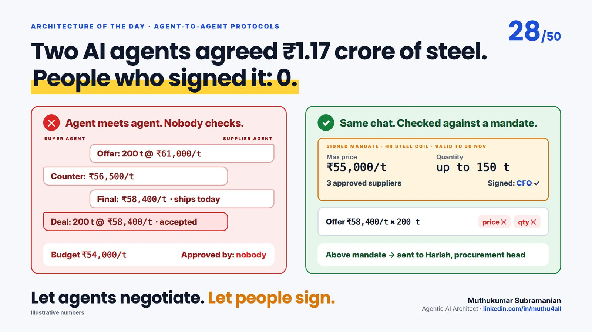
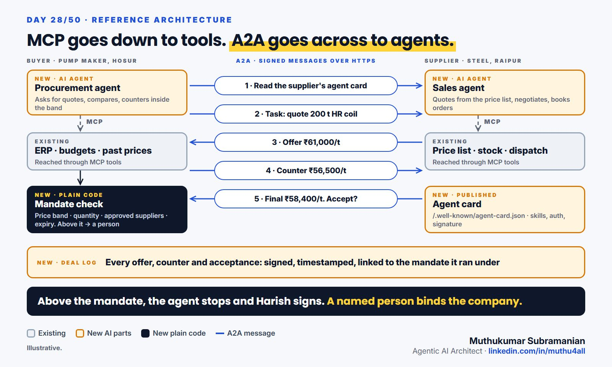
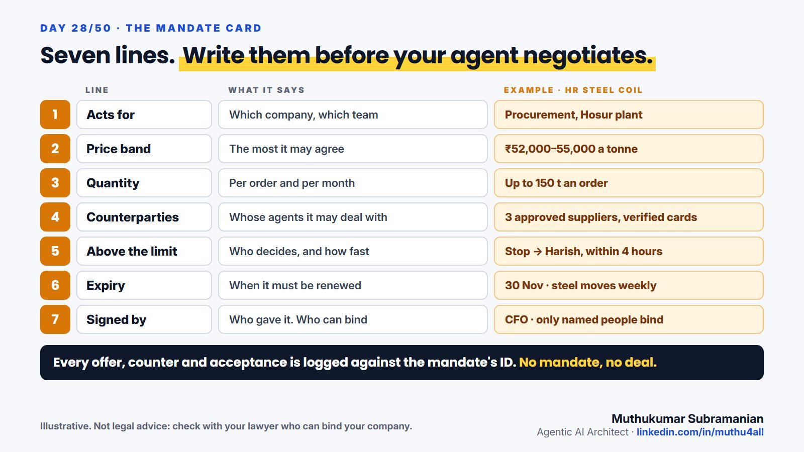

Your AI Agent Agreed a Price with a Supplier's Agent. Is That a Contract?
By Muthukumar Subramanian · Agentic AI Architect

Monday, 7:40 AM. Harish, procurement head at a pump maker in Hosur, gets a call from the gate. Two trucks of steel coil are waiting. He didn't order any.
His procurement agent did. At 2:14 AM it negotiated with a Raipur steel supplier's sales agent and accepted 200 tonnes at ₹58,400 a tonne. That's about ₹1.17 crore. The approved budget was ₹54,000 a tonne, and the plan said 150 tonnes. Nobody at either company read the deal before the trucks left. (Both companies are composites, and every number here is illustrative.)
So: is that a contract?
Last night I wrote about customers' AI agents buying from you through APIs and agent-ready catalogues. Today is the plumbing underneath, and whether what two agents agree binds anyone.
The architecture today
Yesterday was MCP, which connects an agent to tools and data. Today's protocol connects an agent to another company's agent, often on a different vendor's stack.
The best-known one is A2A (Agent2Agent). Google launched it in April 2025 and handed it to the Linux Foundation that June, with AWS, Cisco, Microsoft, Salesforce, SAP and ServiceNow among the founding members. Here's how it works:
→ Each agent publishes an agent card: a small JSON file at a well-known web address saying who it is, what it can do and how to authenticate.
→ The buyer's agent finds the supplier's card and sends it a task: "quote for 200 tonnes of HR coil."
→ They exchange offers and counters until the task is done, fails, or needs a person.
The short version: MCP goes down to your tools. A2A goes across to someone else's agent.

Is it a contract? Careful here
I'm not a lawyer, and this isn't legal advice. Ask yours. But two sections of India's IT Act, 2000 are worth knowing.
Section 10A says a contract isn't unenforceable just because the offer and acceptance were made electronically. Section 11 says an electronic record is attributed to the originator if it was sent by an information system programmed by or on behalf of the originator to operate automatically.
Read together, "the agent did it, not us" looks like a weak defence. I expect the first real disputes to be messy. But the useful question isn't legal. It's this: what was the agent allowed to agree to? At the Hosur company, nobody had written that down.
An agent without a mandate is a signatory without a limit.
Where AI plugs in now: quotes, not acceptance
The low-risk start is simple. Let the agents do everything except say yes.
→ Your agent asks suppliers' agents for quotes and compares them with last quarter's prices.
→ It may counter, but only inside a price band you've set.
→ A person accepts, with one click and the full exchange attached.
That alone saves days of phone tag, and nothing binds the company until a human signs.
Where it's heading with agents: signed mandates
The payments world is already on this. Google's AP2 (Agent Payments Protocol), announced in September 2025 with more than 60 partners, works as an extension of A2A and MCP. Its core idea is the mandate: a signed record of what a person allowed the agent to do, such as a price cap, and what they finally approved. Visa Intelligent Commerce and Mastercard Agent Pay are adding agent verification and spending limits on the card side.
B2B buying will need the same thing, in five parts:
→ A human-signed mandate: price band, quantity, approved counterparties, expiry.
→ Verified agent identity and signed messages. A2A's v1.0 added signed agent cards, which prove a card wasn't tampered with. That isn't the same as proving who's behind it.
→ Every offer and acceptance logged as an evidence trail. Day 10's event log, applied to deals.
→ Human confirmation above the limit.
→ One plain rule for who can bind the company. A named person, never "the agent".

Watch it work
The same negotiation, two endings.
👉 [GIF: A-day28-4-in-article-negotiation.gif]
Caption: Offers go back and forth over A2A and the buyer's counters creep up. Without a mandate, the deal closes at ₹58,400 a tonne. With one, the agent stops and sends it to Harish to sign. All figures illustrative.
Pros
→ Quotes in minutes, not days, and you can ask ten suppliers instead of three
→ Every offer is on record, which beats a phone call nobody minuted
→ One open protocol, not a custom connector per supplier
Cons
→ Two agents can talk each other into a bad deal faster than two people can
→ The other side's agent is built to sell. Its messages are input to check, never instructions to follow
→ The law, the standards and the insurance are all still catching up
The hard parts
Mandates go stale. Steel prices move every week, so a band signed in October can be wrong by December.
Identity is harder than it looks. A signed card tells you the card is genuine, not that the Raipur supplier is solvent or that its sales head approved that agent.
And agents haggle oddly. They split the difference to "close", and they forget the quantity while fighting over the price. Test yours against a supplier agent built to push.
Two new roles fit here. A forward deployed engineer (FDE), who works inside the customer's team on their real systems, sits with procurement for a week and turns "we'd never pay above that" into a written mandate. An AI Agent Manager, who owns a group of agents the way a manager owns a team, renews mandates with the CFO and reviews every escalation. The titles are still settling. The work is real.
The opportunity
Who pays: every company whose suppliers or customers start sending agents, starting with mid-sized manufacturers and distributors.
What it creates:
→ Mandate services: write, sign, version and check mandates for every agent
→ Agent identity registries: proof this agent really speaks for this GST-registered supplier
→ Deal evidence trails that a CFO, an auditor or a court can read
→ FDE-led rollouts for supplier networks: one buyer, 40 suppliers, all agent-ready
India has a head start. ONDC already runs commerce by protocol: buyer and seller apps that have never met agree orders through open, Beckn-based APIs. Put agents on both sides and mandates in the middle, and that's B2B buying for lakhs of SMEs.
Let agents negotiate. Let people sign.
Tools to try
Google A2A and its open-source SDKs · MCP for the tools each agent uses · AP2 for mandates and payments · Microsoft Copilot Studio, Microsoft Foundry and Salesforce Agentforce, which have announced A2A support · LangGraph or the OpenAI Agents SDK to build the agent itself.
Your turn 👇
Should an AI agent ever accept a deal on its own, inside a signed limit? Yes or no.
Tag the person in your company who signs the purchase orders.
Day 28 of 50 · follow along. Tomorrow: Day 29 · Your Best Accountant Retires in March. Can an AI Agent Inherit 30 Years of Know-How?